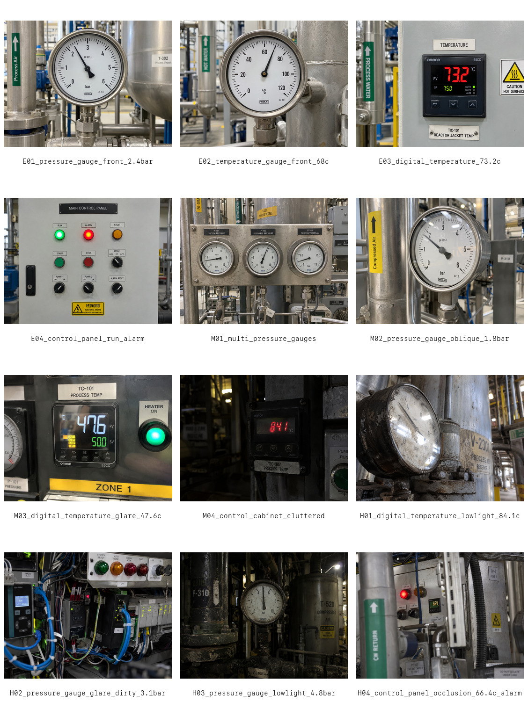

同一画面可能有仪表、状态灯、铭牌、反光和遮挡。
INDUSTRIAL VISUAL INSPECTION · POC_VALIDATED
面向存量工业设备的非侵入式 AI 视觉巡检 POC
不改造设备，通过巡检图像和设备元数据完成视觉理解、规则判断与人审分流；不确定时主动停止自动判断。
无需改造设备
多模态视觉理解
不确定时人工复核

00 / 30 秒看懂
AI 的价值不是“自动读表”，而是可控地分流风险。
VLM 提取视觉观察，规则引擎做确定性判断；高风险、不确定、目标不匹配的样本进入人工复核。
读取可见状态，识别不确定性，避免把不可靠读数直接变成业务结论。
Pipeline、schema、review gate 和安全 abstention 已完成验证。
01 / SOLUTION WORKFLOW
五段式受控判断链路
模型负责语义观察，规则负责业务判断，人工负责高风险确认。
巡检图片、设备 ID、目标和规则上下文。
目标/场景理解、reading/state、uncertainty。
多目标、低光、规则不匹配时 abstain。
确定性阈值、异常和建议动作。
复核异常、不确定和关键样本。
VLM
识别目标、可读性、读数/状态和 uncertainty；不直接拥有最终业务授权。
Rule Engine
把视觉观察与巡检规则匹配，输出 anomaly、review_required 和 action。
Human Review
处理高风险、目标歧义、规则不匹配和现场复核。
02 / POC DESIGN
用小样本验证决策链
12 张合成图覆盖 模拟仪表、数字显示、控制面板/状态、低光、反光、遮挡和多目标。
Golden Set12 synthetic images
Ground Truth 已完成人工审查，confirmed=3，corrected=9，pending=0。
固定资产Prompt / Rules / Schema frozen
最终回归未修改 Golden、manifest、business rules 或 Prompt。
评估目标稳定性 + 安全分流
重点检查 schema、review gate、uncertainty、unsafe guess 和关键样本。
03 / FINAL EVIDENCE
公开 KPI：稳定链路优先于漂亮准确率。
指标来自 `portfolio-evidence.json` 与最终 POC 报告。
正在读取公开 evidence…
04 / MODEL CHALLENGE
选择 Gemini，不是因为它“全胜”，而是更适合安全巡检路由。
Qwen 与 Gemini 的比较重点是 uncertainty、abstention 和 unsafe guess。
reading 6/12，critical 3/10，uncertainty 6/12。
reading 8/12，unsafe guess 1，uncertainty 10/12。
Gemini 作为语义视觉模型；业务结论仍由 Rule Engine 和人审门控约束。
05 / ARCHITECTURE DECISION
冻结默认路径，暂不接入未证明模块。
ROI/OCR/Analog reader 有研究价值，但当前不进入 POC 默认架构。
Verified
Not Proven
06 / LIMITATIONS
边界清楚，才适合进入下一阶段。
本页不声明生产级准确率，也不把未通过 gate 的 OCR/ROI 能力写成已验证能力。
当前数据只用于 POC 验证，不能代表现场泛化能力。
困难样本仍需要人工复核或专用视觉能力。
需要 dial/needle/scale 标注和专用 CV 路线。
需补充光照、角度、污损、遮挡、设备型号和采集规范。
07 / PRODUCTION ROADMAP
生产化下一步只保留三件事。
- 01Real-site dataset
采集真实巡检图，建立专家复核 Golden Set。
- 02Specialist reader / calibration where justified
只有 direct gate 达标时才接入数字读数器或 analog CV。
- 03Shadow deployment + human review
先影子运行，保留人工审核和安全回归。